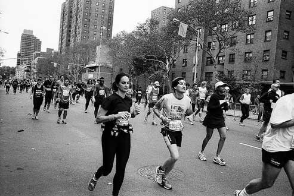
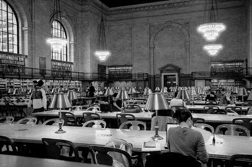

3D Gallery Room Demo 1 Demo 2
Free jQuery Plugins, HTML5 and CSS3 Scripts - Providing tons of Jquery Plugins,Html5 and CSS3 Scripts for web developers to preview and download. By using these resources, you can create amazing effects with fancy animations of content elements like text, images and so on.

Penn. Station, Madison Square Garden and Empire State Building
New York City, 2009, by Thomas Claveirole

American Museum of Natural History #1
New York City, 2009, by Thomas Claveirole

NYC Marathon in Harlem #4
New York City, 2009, by Thomas Claveirole
Cathedral Church of Saint John the Divine #3
New York City, 2009, by Thomas Claveirole

SoHo
New York City, 2009, by Thomas Claveirole
Manhattan Downtown/Wall St. Heliport
New York City, 2009, by Thomas Claveirole

Musée National du Moyen Âge
Paris, 2009, by Thomas Claveirole

Métro Jussieu
Paris, 2009, by Thomas Claveirole

Rose Main Reading Room, New York Public Library
New York City, 2009, by Thomas Claveirole

Midtown Manhattan
New York City, 2009, by Thomas Claveirole